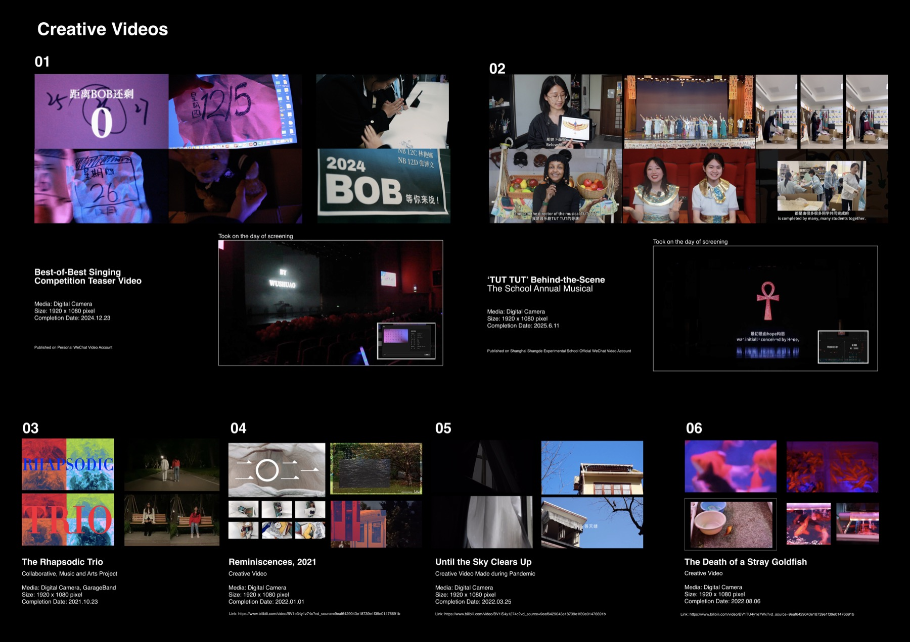
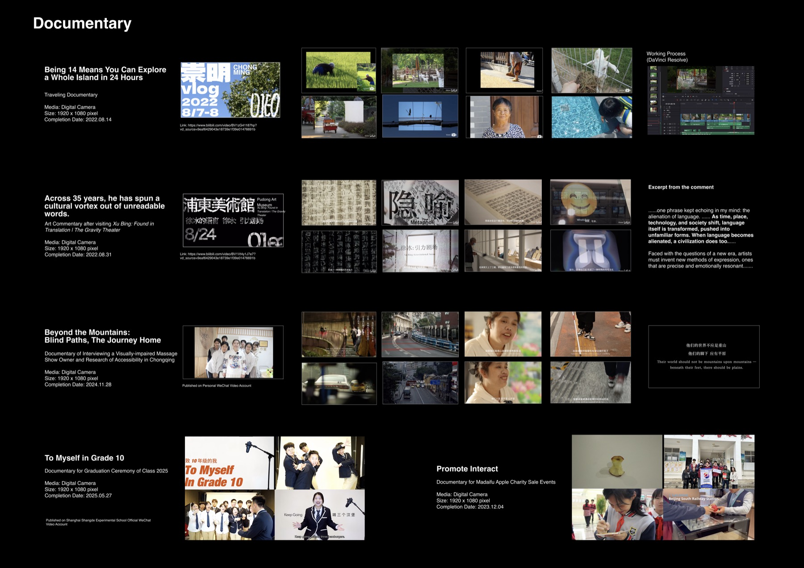
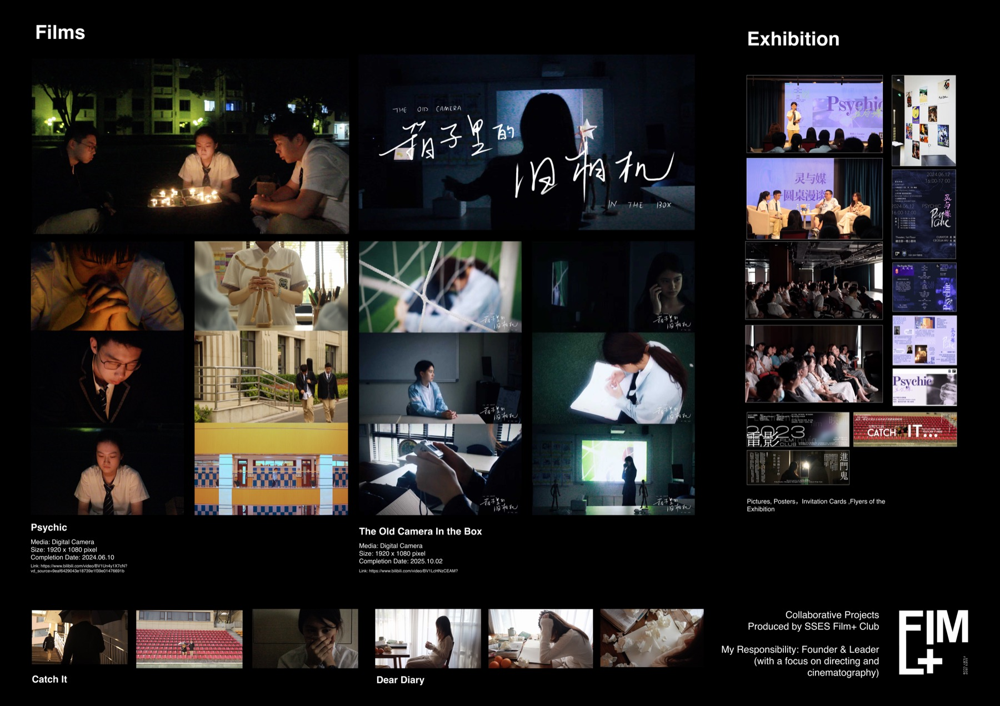
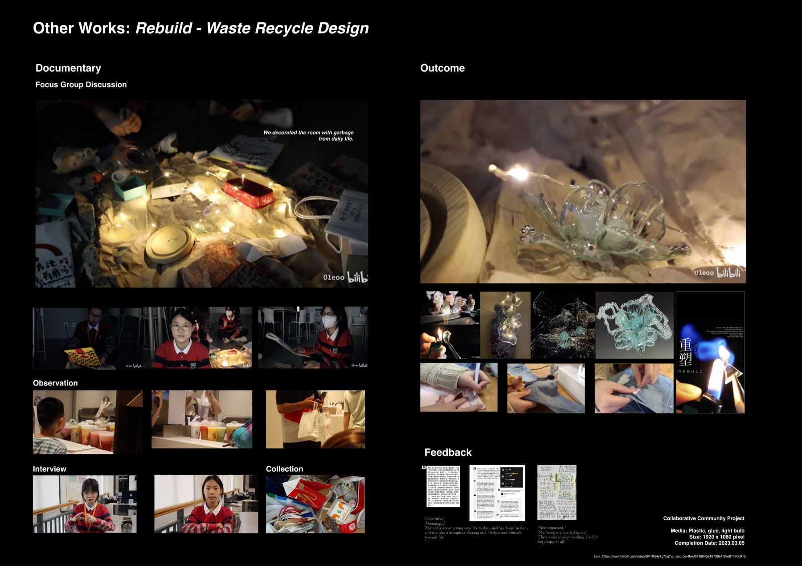

Creative Videos
Founder & lead of SSES Film+ Club · 30,000+ views across official and personal accounts




PsychicShort film2024
The Old Camera in the BoxCreative short2025
Beyond the Mountains: Blind PathsDocumentary2024
To Myself in Grade 10Graduation documentary2025
'TUT TUT' Behind the ScenesMaking-of2025
Best-of-Best Competition TeaserEvent teaser2024
Promote InteractCharity documentary2023
Reminiscences / Until the Sky Clears Up / The Death of a Stray GoldfishCreative videos · Bilibili2021–22